세일링 · 파이널 디너 · Sants
시간대별 일정, 이동 정보, 지도와 관람 포인트를 확인하세요.
예상 도보73분
대중교통42분
택시·차량0분
일정 지점8곳
여행 전 확인: 우천 시 Casa Milà 내부·쇼핑·El Born으로 교체.
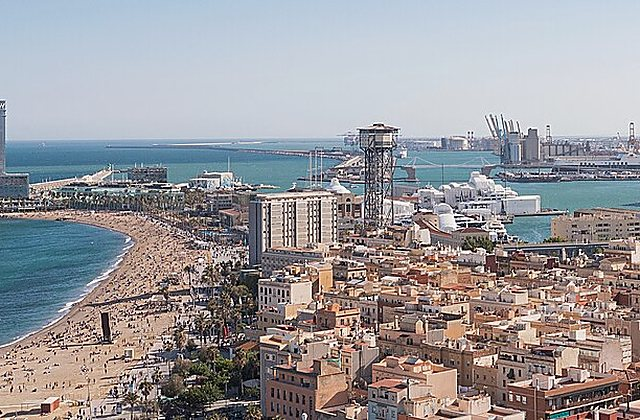
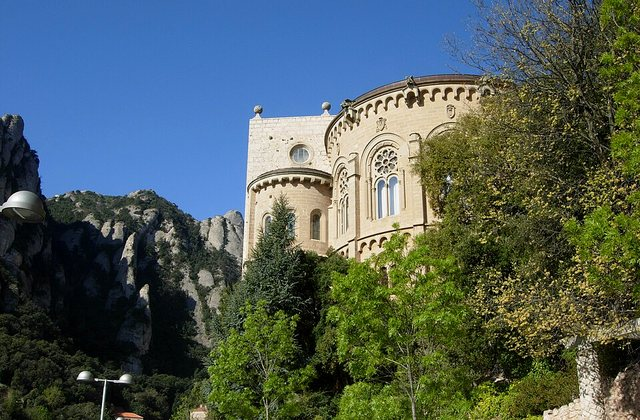
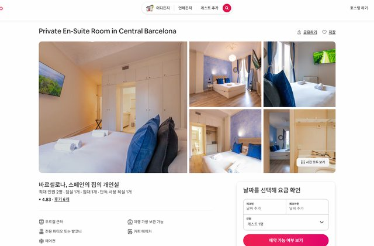
왜 중요한가숙소 인근은(는) 오늘의 흐름에서 다음 장면으로 자연스럽게 이어지는 핵심 지점이다.
볼 포인트브런치. 대표 풍경과 공간의 분위기에 집중한다.
실전 팁혼잡하면 핵심을 보고 이동하고, 예약 장소는 15분 일찍 도착한다.
시간 관리표시된 이동시간에 환승·대기 10분을 더한다.
MetroUrgell Metro Barcelona → Port Olimpic Barcelona25분 · 경로 ↗ 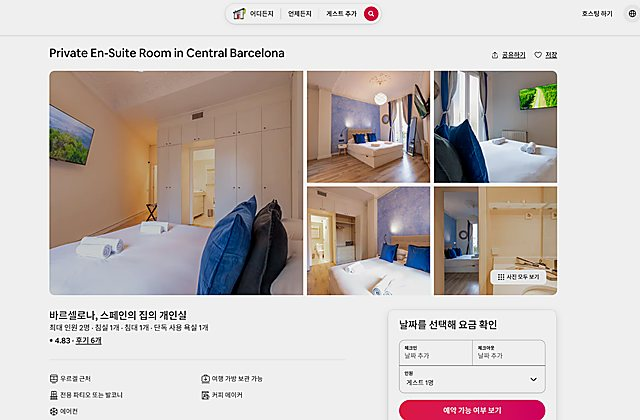
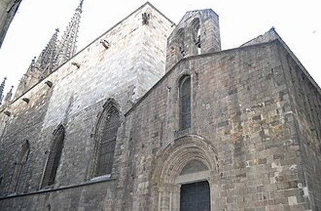
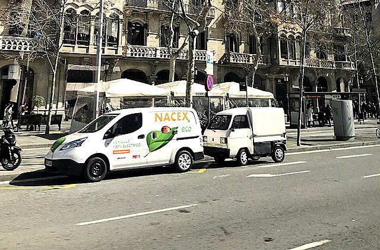
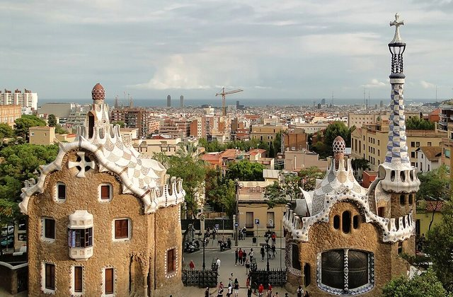
왜 중요한가Port Olímpic은(는) 오늘의 흐름에서 다음 장면으로 자연스럽게 이어지는 핵심 지점이다.
볼 포인트세일링 출발지. 대표 풍경과 공간의 분위기에 집중한다.
실전 팁혼잡하면 핵심을 보고 이동하고, 예약 장소는 15분 일찍 도착한다.
시간 관리표시된 이동시간에 환승·대기 10분을 더한다.
도보Port Olimpic Barcelona → Port Olimpic Barcelona5분 · 경로 ↗ Barcelona Sailing
약 2시간 세일링
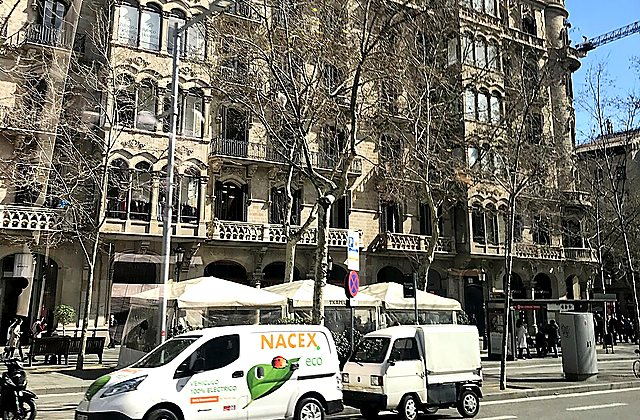
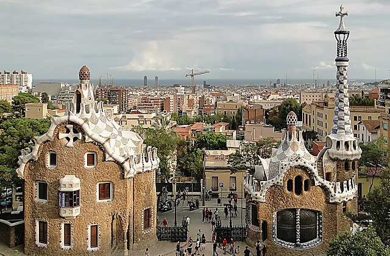
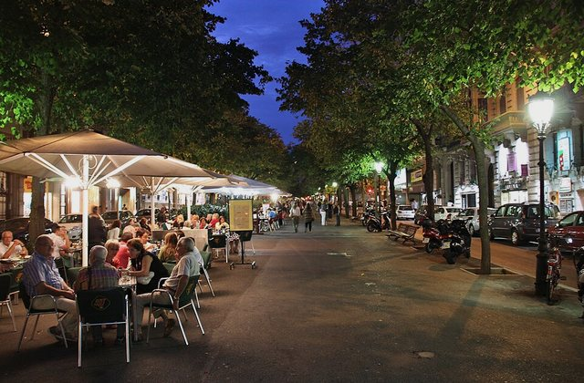
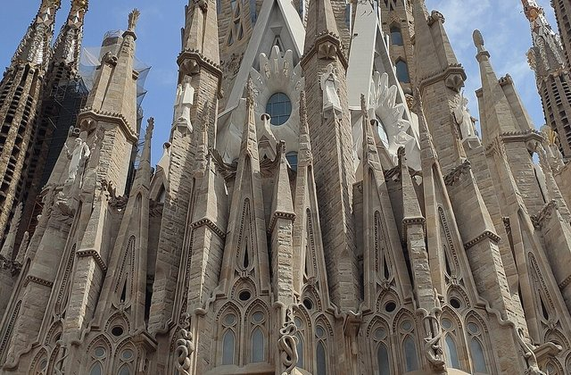
왜 중요한가Barcelona Sailing은(는) 오늘의 흐름에서 다음 장면으로 자연스럽게 이어지는 핵심 지점이다.
볼 포인트약 2시간 세일링. 대표 풍경과 공간의 분위기에 집중한다.
실전 팁혼잡하면 핵심을 보고 이동하고, 예약 장소는 15분 일찍 도착한다.
시간 관리표시된 이동시간에 환승·대기 10분을 더한다.
도보Port Olimpic Barcelona → Port Olimpic Restaurants10분 · 경로 ↗ 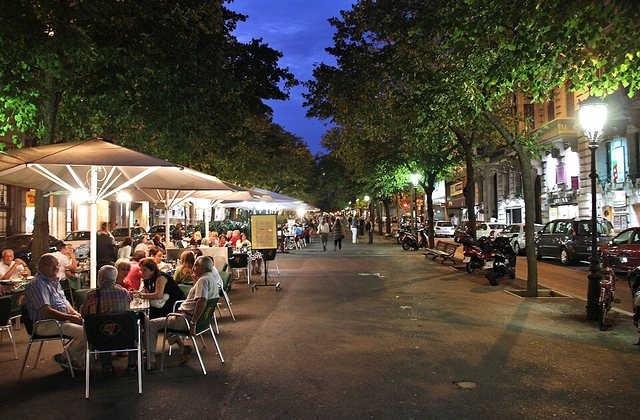
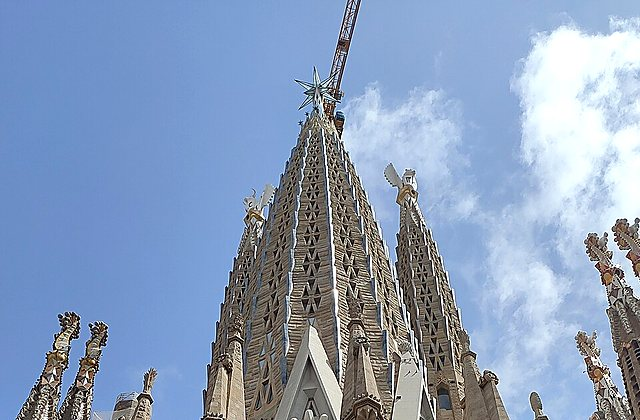
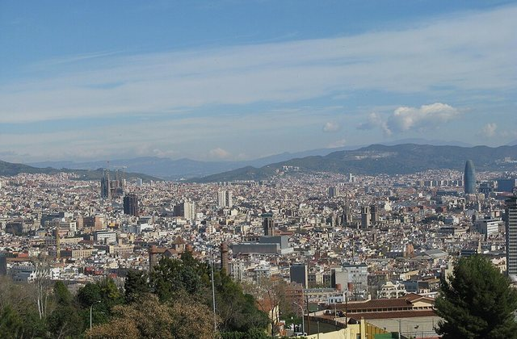
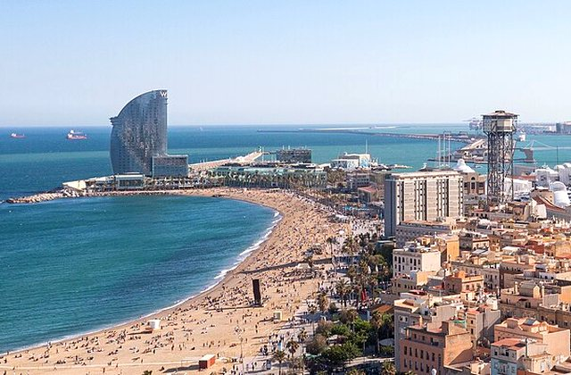
왜 중요한가해변 점심은(는) 오늘의 흐름에서 다음 장면으로 자연스럽게 이어지는 핵심 지점이다.
볼 포인트가벼운 점심. 대표 풍경과 공간의 분위기에 집중한다.
실전 팁혼잡하면 핵심을 보고 이동하고, 예약 장소는 15분 일찍 도착한다.
시간 관리표시된 이동시간에 환승·대기 10분을 더한다.
MetroPort Olimpic Barcelona → Urgell Metro Barcelona25분 · 경로 ↗ 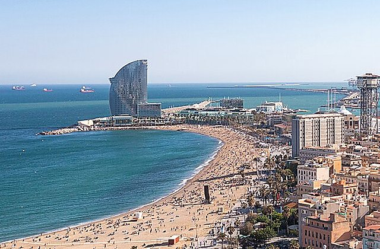
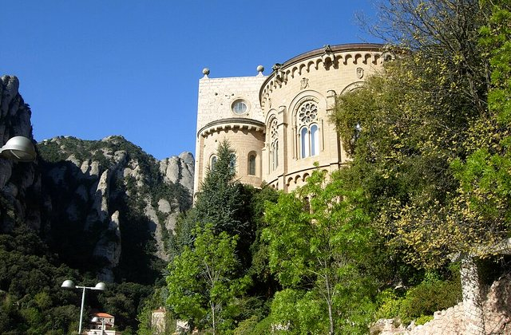
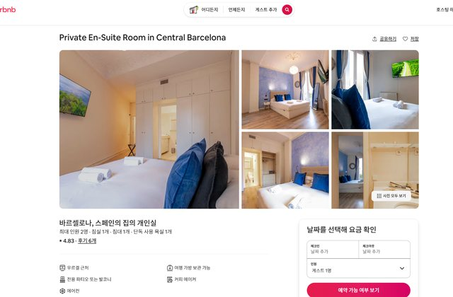
왜 중요한가숙소 복귀은(는) 오늘의 흐름에서 다음 장면으로 자연스럽게 이어지는 핵심 지점이다.
볼 포인트짐 정리. 대표 풍경과 공간의 분위기에 집중한다.
실전 팁혼잡하면 핵심을 보고 이동하고, 예약 장소는 15분 일찍 도착한다.
시간 관리표시된 이동시간에 환승·대기 10분을 더한다.
MetroUrgell Metro Barcelona → 7 Portes Barcelona20분 · 경로 ↗ 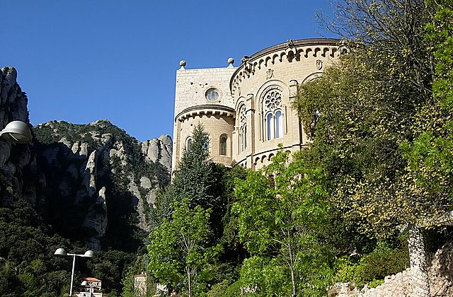
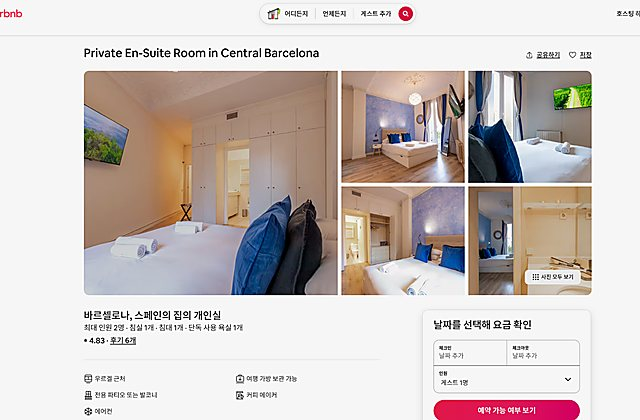
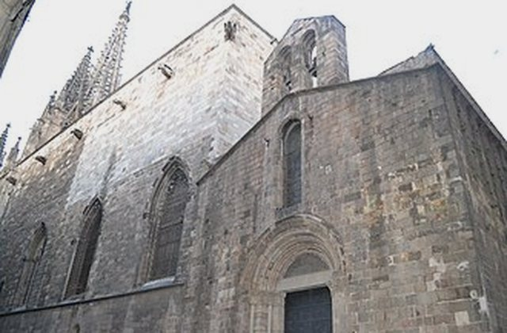

왜 중요한가7 Portes은(는) 오늘의 흐름에서 다음 장면으로 자연스럽게 이어지는 핵심 지점이다.
볼 포인트파이널 디너. 대표 풍경과 공간의 분위기에 집중한다.
실전 팁혼잡하면 핵심을 보고 이동하고, 예약 장소는 15분 일찍 도착한다.
시간 관리표시된 이동시간에 환승·대기 10분을 더한다.
Metro7 Portes Barcelona → Festa Major de Sants Barcelona20분 · 경로 ↗ Festa Major de Sants
마지막 축제 산책
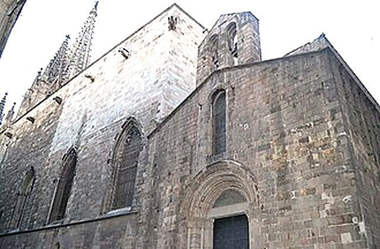
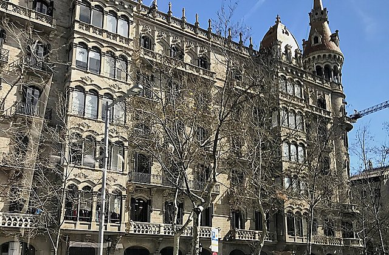

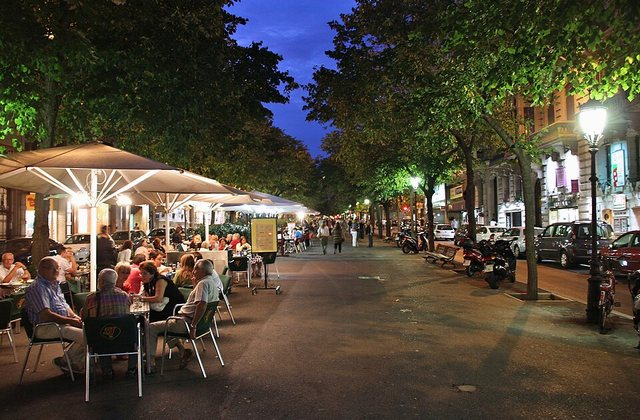
왜 중요한가Festa Major de Sants은(는) 오늘의 흐름에서 다음 장면으로 자연스럽게 이어지는 핵심 지점이다.
볼 포인트마지막 축제 산책. 대표 풍경과 공간의 분위기에 집중한다.
실전 팁혼잡하면 핵심을 보고 이동하고, 예약 장소는 15분 일찍 도착한다.
시간 관리표시된 이동시간에 환승·대기 10분을 더한다.
MetroFesta Major de Sants Barcelona → Urgell Metro Barcelona18분 · 경로 ↗ 
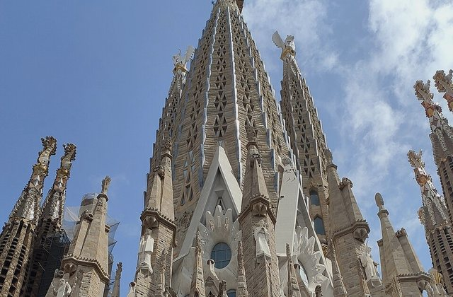
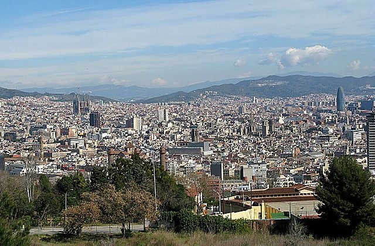
왜 중요한가숙소 복귀은(는) 오늘의 흐름에서 다음 장면으로 자연스럽게 이어지는 핵심 지점이다.
볼 포인트마지막 밤 종료. 대표 풍경과 공간의 분위기에 집중한다.
실전 팁혼잡하면 핵심을 보고 이동하고, 예약 장소는 15분 일찍 도착한다.
시간 관리표시된 이동시간에 환승·대기 10분을 더한다.